In search of product-market fit, Abstra was exploring whether a faster, more intuitive way to build complex internal tools would drive developer adoption.
As the product designer, I worked on the product concept, user testing, and interaction specifications, and contributed to the search for product-market fit.
Internal tools have complex interactions and a direct effect on companies’ productivity. Developers often build them without dedicated design support. Abstra could take on much of that design work through a system that already accounted for layout, styling, and interaction states.
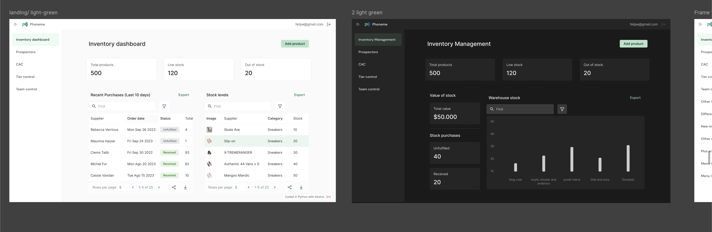
Abstra was a VS Code plugin for composing interfaces from ready-made widgets, connecting them to business rules in Python, and deploying internal tools within the developer’s coding workflow.
The CEO proposed VS Code as a distribution strategy: meet developers where they already worked and reduce switching between the IDE, terminal, and browser.
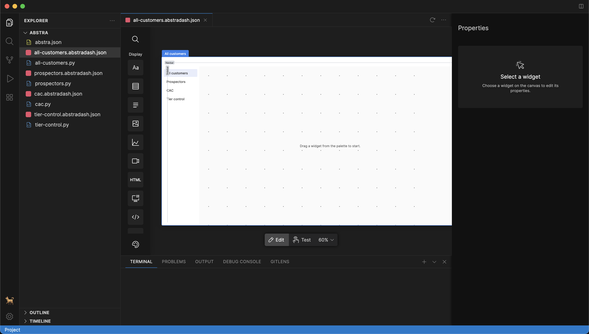
The visual builder had to reduce interface work without limiting how engineers wrote business logic.
The design challenge was to define where to give developers control and where the system should make a decision for them.
The design system was the widgets’ main specification. It had to define how components behaved together, so developers could assemble a complex tool without designing every interaction themselves.
Placement was one of those decisions. The grid handled positioning: users could place components within 12 columns, while a rectangular block system kept components of different heights aligned.
This separated choosing where a widget belonged from adjusting the space inside it.
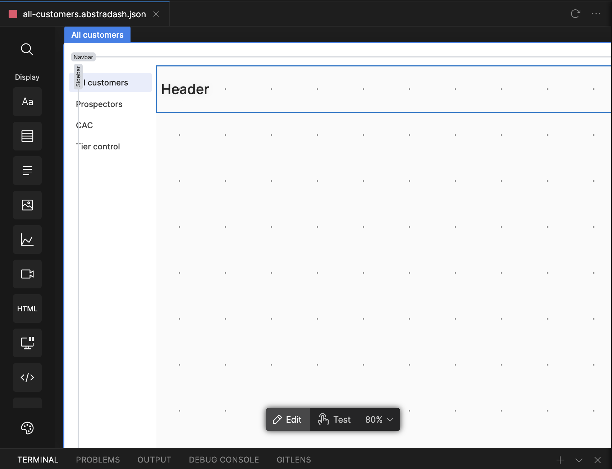
While the grid handled placement, each component carried its own spacing. An 8px internal margin helped nearby components read as a group without making content in separate columns feel connected.
This introduced a visual tradeoff: some compositions had uncomfortable space between columns. Because the immediate goal was to validate product-market fit, I left that refinement for a later iteration.
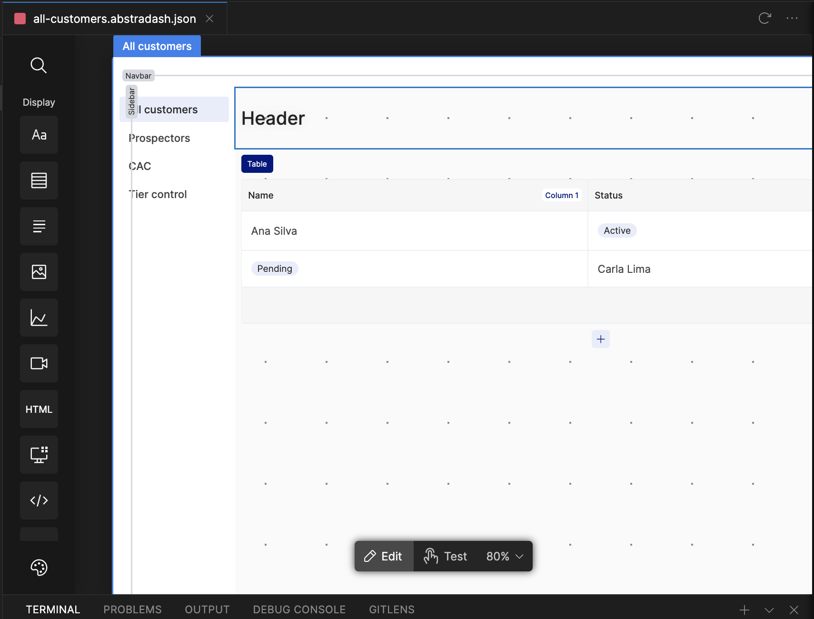
Components were flexible in purpose and restrained in styling. Their consistent composition made Abstra recognizable while leaving room for the client’s brand. I used interviews with users of the original builder to find blind spots and guide revisions.
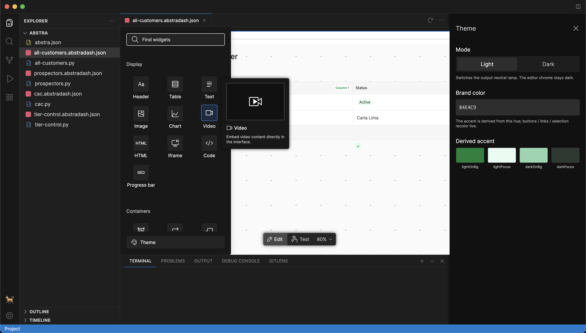
Containers needed their own rules. A sidebar could act as a canvas, but it did not have the same purpose or room as the main workspace. Later interaction specifications made that boundary explicit: a smaller set of components could be dropped into a sidebar, while modals had three canvas sizes. Reusing the composition model still required defining what each container could accept.
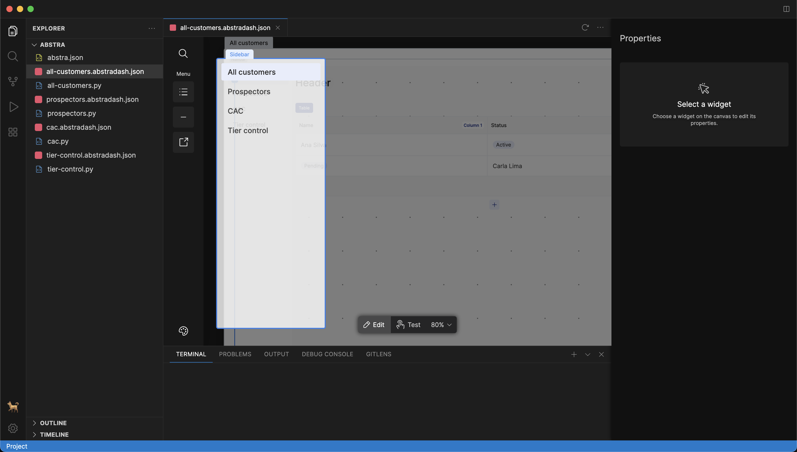
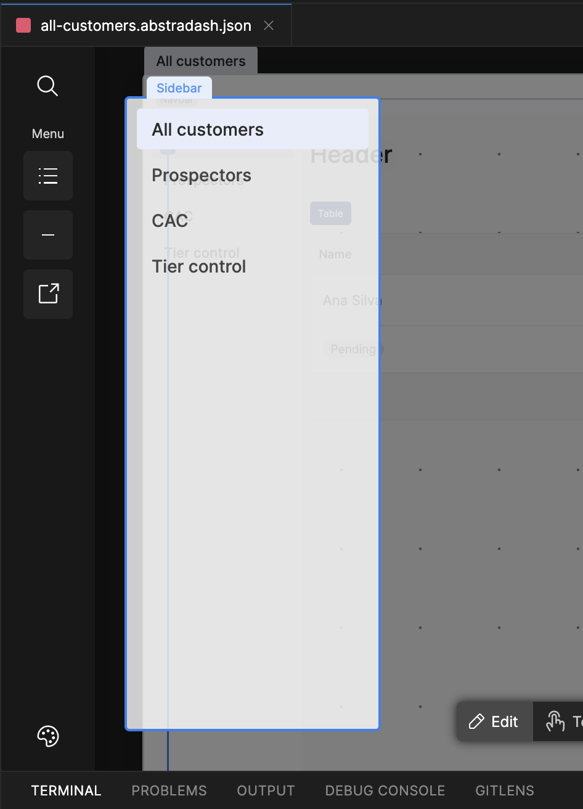
Those specifications also separated editing from testing. In editing, selecting a widget would expose its properties in the Inspector, with changes reflected on the canvas. In testing, the canvas would respond as the finished tool, with a way back to editing. The same click needed a clear meaning in each mode: configure the component or use it.
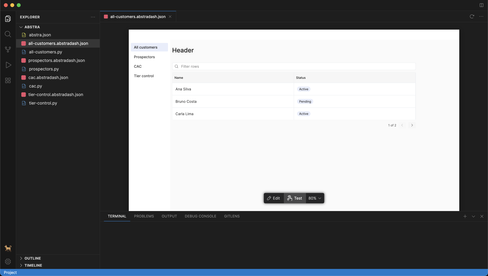
Developers could bring their brand without having to assemble and maintain a palette themselves. A single hexadecimal value was enough to define a brand color — on light or dark interfaces.
The palette derived from that color had to work across surfaces and states. The later theme specification kept light and dark surfaces fixed and required the generated colors to preserve contrast with backgrounds and labels.
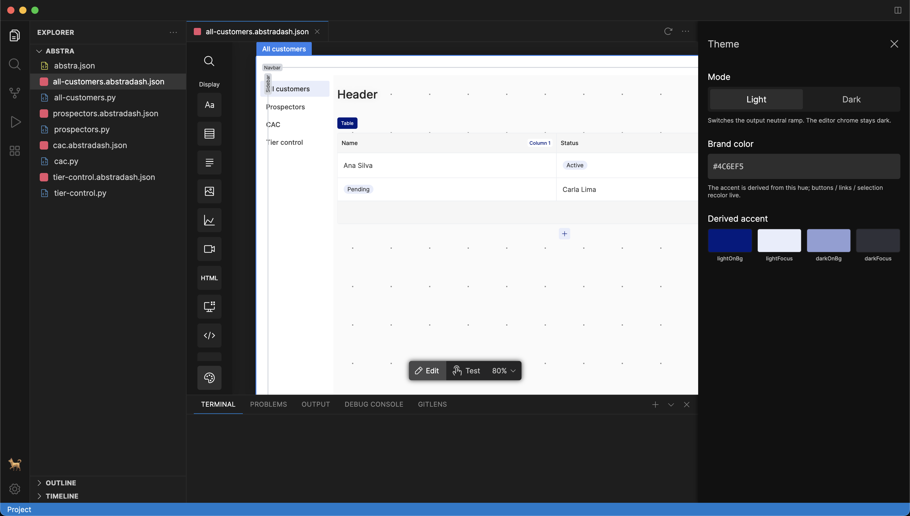
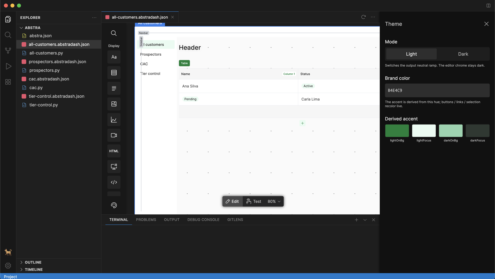
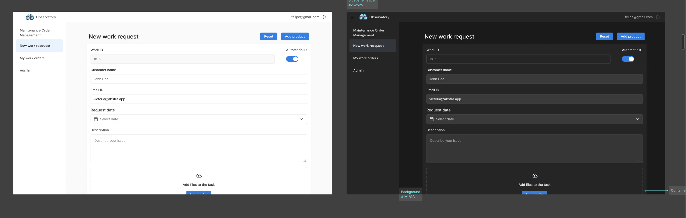
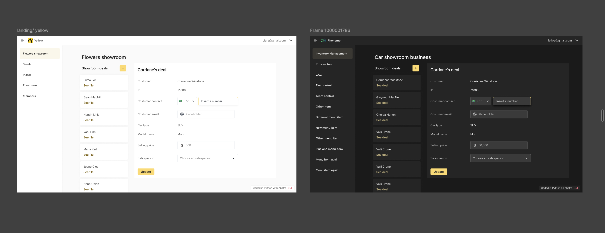
We launched on Product Hunt and the VS Code Marketplace. The plugin recorded 7,000 downloads in its first week. A YouTube overview spread organically, and VS Code featured Abstra on the Marketplace homepage for two weeks.
The design reduced the interaction work involved in building an internal tool. It also gave the business team a working product to demonstrate on sales calls and a consistent, high-quality answer to “how does it work?”
✢ ✢ ✢